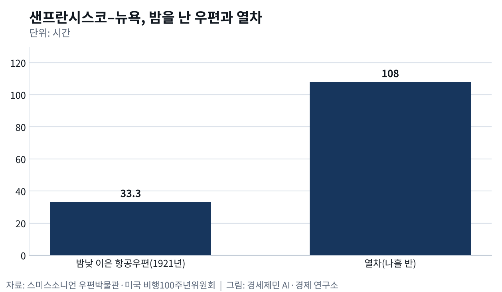
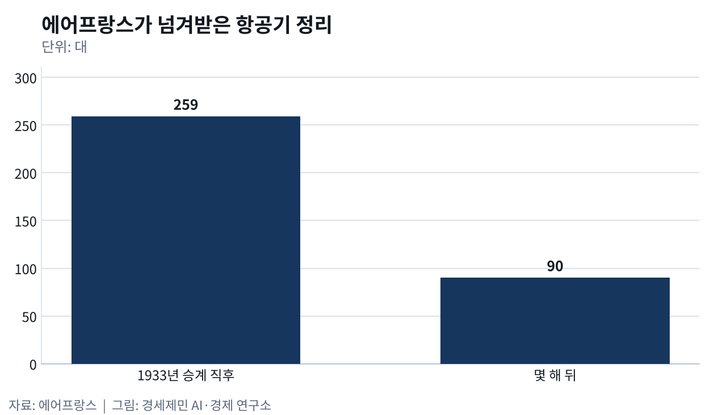

어린왕자와 야간비행
- 에어프랑스가 문을 연 1933년 10월 7일, 밤의 우편기 회사는 이미 무너져 있었다
- 소설 『야간비행』 바깥에서 이어진 밤의 항공우편
93년 전 오늘인 1933년 10월 7일 파리 르부르제 공항에서 에어프랑스가 문을 열었다. 프랑스 항공사 다섯을 합쳤고, 그 가운데 하나가 1931년 지급을 멈춘 아에로포스탈이었다. 이 회사 조종사였던 생텍쥐페리가 1931년 낸 소설이 『야간비행』이다. 소설 속 우편기가 어디서 와서 어디로 갔는지 짚는다(에어프랑스·프렌치 스터디스).
툴루즈에서 다카르까지
이 노선은 툴루즈 기업가 피에르조르주 라테코에르가 1차대전이 끝나고 여섯 주 뒤인 1918년 말 툴루즈와 스페인 바르셀로나를 잇는 상업 운항으로 열었다. 1919년 9월 모로코 카사블랑카까지 정기편을 띄웠고 1925년 세네갈 다카르에 닿았다. 라테코에르가 세운 항공사는 흔히 「라인」이라 불렸다(미국 비행100주년위원회).
사막 구간에서는 엔진이 서면 조종사가 적대적인 부족이 사는 땅 한가운데 내려야 했다. 회사가 비행기를 두 대씩 짝지어 띄워 서로 구하게 한 것도 그 때문이다. 1926년 11월 모리타니 사막에 내린 레오폴 구르는 몸값을 노린 무리에 붙잡혀 다친 다리로 여드레를 끌려다녔다. 캅쥐비 근처에 버려진 뒤 카사블랑카 병원에서 다리를 잘랐으나 그해 12월 5일 숨졌다(라포스트박물관).

생텍쥐페리는 1926년 이 회사에 들어와 이듬해 모로코 남부 사막 캅쥐비 기착지 책임자가 됐다. 1928년 어머니에게 보낸 편지에는 그곳에서 수도사 같은 삶을 산다고 적었다. 『어린 왕자』는 1943년 뉴욕에서 영어판과 프랑스어판이 함께 나왔다. 프랑스 초판은 그가 숨진 뒤인 1946년에 나와 그해 6월에만 1만부가 팔렸다(라포스트박물관).
밤을 날아야 열차를 이긴다
미국 우정부가 1920년 9월 8일 시작한 대륙 횡단 항공우편은 낮에만 날았다. 조종사가 땅 위 지형지물을 보고 길을 찾았기 때문이다. 밤이 되면 우편 자루를 열차에 옮겨 실었고 날이 밝으면 다른 비행기가 받아 날았다. 서부의 험한 지형과 궂은 날씨, 불안한 기체까지 겹쳐 이 서비스는 돈이 많이 들고 위험하다는 비판을 받았다(미국 비행100주년위원회).
우정부는 1921년 2월 22일 밤낮을 잇는 대륙 횡단 시험비행에 나섰다. 조종사 잭 나이트는 눈과 안개 속에 노스플랫에서 시카고까지 밤새 날았고, 지상에 피운 모닥불과 조명탄을 길잡이로 삼았다. 샌프란시스코를 떠난 우편은 33시간 20분 만에 뉴욕에 닿았다. 같은 거리를 열차로 가면 나흘 반이 걸렸으니 사흘 넘게 앞선 셈이다(스미스소니언 우편박물관·미국 비행100주년위원회).

그 뒤 미국 우정부는 섬광등과 탐조등을 단 탑을 지형에 따라 16~48km 간격으로 세워 하늘길에 불을 켰고, 1924년 7월 1일 밤낮을 잇는 대륙 횡단 정기편을 띄웠다. 조종사들은 날이 밝을 무렵 불 켜진 항로 끝에 닿게 밤 비행 시간을 맞췄다. 그해 말에는 뉴욕에서 샌프란시스코까지 34시간 안에 닿는 일이 흔해졌다(미국 비행100주년위원회).
소설 속 리비에르와 실제 운항 책임자 도라
생텍쥐페리는 1929년 아르헨티나로 건너가 아에로포스타 아르헨티나를 이끌며 파타고니아 노선 개척에 조종사로 나섰다. 영국 학술지 『프렌치 스터디스』에 2018년 실린 비평판 서평은 이 소설이 1929년 10월부터 1931년 5월 사이에 쓰였다고 정리했다. 그는 주로 밤에 하루 두세 쪽씩 썼다(프렌치 스터디스·라포스트박물관).
소설에는 폭풍 속 조종사 파비앵과 땅에서 그를 기다리는 운항 책임자 리비에르가 나온다. 실제 노선에서는 1920년부터 운항 책임자를 맡은 디디에 도라가 무모한 조종사 대신 「규율 있는 노동자」를 뽑았다. 우편은 어떤 날씨에도 제시간에 닿아야 했기 때문이다. 항공사학자 베르나르 마르크는 생텍쥐페리가 『야간비행』에서 도라에게 깊은 경의를 바쳤다고 적었다(라포스트박물관·유니베르살리스).

노선은 1930년 5월 13일 장 메르모즈가 수상기로 세네갈에서 브라질 나탈까지 3000km 넘게 날면서 남대서양을 넘었다. 그 결과 툴루즈에서 칠레 산티아고까지 1만2700km가 나흘 반 거리로 줄었다. 한 달 뒤 6월 13일 앙리 기요메는 안데스산맥에 불시착해 닷새 낮 나흘 밤을 걸어 살아 돌아왔다. 눈이 녹은 뒤 찾은 우편물은 멀쩡했고 여섯 달 뒤 배달됐다(라포스트박물관·랑볼데피오니에).
파산 뒤에도 이어진 밤 우편
남대서양을 넘은 이듬해 회사가 무너졌다. 대공황 뒤 프랑스 정부가 확정 계약을 맺고도 1931년 3월 보조금을 끊자 아에로포스탈은 지급을 멈추고 강제 청산 절차에 들어갔다. 그 자산을 사들인 회사가 1933년 다섯 항공사를 합쳐 출범한 에어프랑스다. 새 회사는 넘겨받은 항공기 259대를 몇 해 만에 90대로 줄였다(에어프랑스).
도라는 그 뒤 1935년 국내 우편 항공사 에르 블뢰(Air Bleu)를 세웠다. 국가가 이 회사를 넘겨받은 뒤인 1939년 5월 10일 그는 파리와 보르도와 포를 잇는 첫 야간 우편 시험 노선을 열었다. 전쟁 뒤 프랑스 우정당국이 되살린 야간 우편망도 그가 이끌었다. 1991년부터는 보잉 737이 낮에는 승객을, 밤에는 우편을 실었다(라포스트박물관).
유럽 에어포스트는 2007년 아일랜드 회사로 넘어갔고, 라포스트 그룹은 2008년 항공우편에서 손을 뗐다. 2026년에는 라테코에르 비행클럽이 부에노스아이레스에서 우수아이아까지 파타고니아 노선을 되짚는 비행에 나섰다. 세네갈은 2005년 생루이와 다카르에 남은 노선 흔적을 유네스코 세계유산 잠정목록에 올렸다(라포스트박물관·르프티주르날·유네스코).
※ 이 기사는 AI 프로그램 클로드를 활용해 작성했습니다.
이 기사는 인공지능을 활용해 작성했습니다. 사실관계는 저자가 확인했습니다.
참고문헌
공식 발표자료와 공공기록
- UNESCO World Heritage Centre, "L'Aéropostale", 세계유산 잠정목록 2072호(세네갈 제출), 2005년 11월 18일. https://whc.unesco.org/en/tentativelists/2072/
- Musée de La Poste, 「La Poste dans les airs : Du pigeon à l'Aéropostale」, 교육자료(Fiche pédagogique), 2019년. https://museedelaposte.fr/system/files/fp_la_poste_dans_les_airs_0.pdf
- L'Envol des Pionniers(Fondation Latécoère), 「Le pilote des Andes」, 『La Gazette des Pionniers』 13호, 2026년 1월. https://www.lenvol-des-pionniers.com/wp-content/uploads/2025/12/gazette-janvier-2026.pdf
- Air France, "The beginnings : 1909-1932", Air France Corporate, 생산일자 미상. https://corporate.airfrance.com/en/beginnings-1909-1932
- Air France, "The take-off: 1933-1945", Air France Corporate, 생산일자 미상. https://corporate.airfrance.com/en/take-1933-1945
- T. A. Heppenheimer, "Air Transportation: Latecoere and 'the Line'", U.S. Centennial of Flight Commission, 생산일자 미상. https://www.centennialofflight.net/essay/Commercial_Aviation/Latecore/Tran22.htm
- U.S. Centennial of Flight Commission, "Airmail 1918 to 1924: The Postal Service Flies the Mail", 생산일자 미상. https://centennialofflight.net/essay/Government_Role/1918-1924/POL3.htm
- Smithsonian National Postal Museum, "Knight's Night", 『Fad to Fundamental: Airmail in America』 온라인 전시, 생산일자 미상. https://postalmuseum.si.edu/exhibition/fad-to-fundamental-airmail-in-america-airmail-creates-an-industry-coast-to-coast/knights
연구보고서와 논문
- Mark Orme, "Antoine de Saint-Exupéry, Vol de nuit. Édition critique par Monique Gosselin-Noat", 『French Studies』 72권 2호, 2018년, 301쪽. https://doi.org/10.1093/fs/kny060
언론 보도
- Adrien Cendron Vallecalle, "Sur les traces de l'Aéropostale : un voyage aux airs de rédemption", lepetitjournal.com 부에노스아이레스판, 2026년 5월 19일. https://lepetitjournal.com/buenos-aires/communaute/traces-laeropostale-voyage-redemption-443571
사전과 참고
- Bernard Marck, "DAURAT DIDIER (1891-1969)", 『Encyclopædia Universalis』 온라인판, 생산일자 미상. https://www.universalis.fr/encyclopedie/didier-daurat/